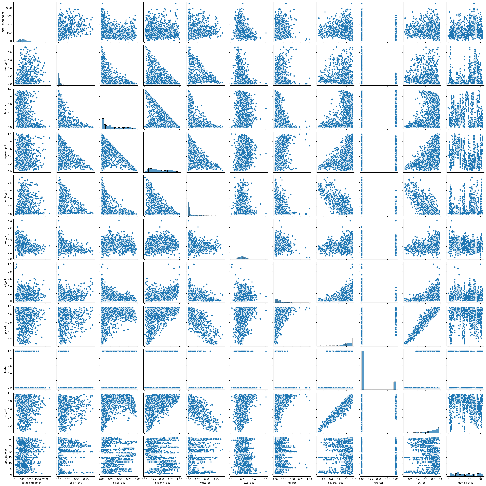

Predictive Statistics
Contents
15. Predictive Statistics#
This notebook uses the sklearn library to run some machine learning
predictions using regression analysis. It has examples of both
Ordinary Least Square and Partial Least Square Regression.
We look at school demographics to see how well we can use those factors to predict mean_scale_score. We look at the grades 3-8 NYS math exams for the most recent academic year in our data set.
import pandas as pd
import numpy as np
from sklearn.linear_model import LinearRegression
from sklearn.model_selection import train_test_split
from sklearn.metrics import mean_squared_error, r2_score
from sklearn.preprocessing import scale
from sklearn.cross_decomposition import PLSRegression
from sklearn.feature_selection import chi2
import statsmodels.api as sm
import matplotlib.pyplot as plt
import seaborn as sns
import math
from IPython.display import Markdown as md
from nycschools import schools, ui, exams
# load the demographic data and merge it with the math data
df = schools.load_school_demographics()
math_df = exams.load_math()
math_df = df.merge(math_df, how="inner", on=["dbn", "ay"])
math_df = math_df[math_df["mean_scale_score"].notnull()]
math_df.head()
| dbn | beds | district | geo_district | boro | school_name_x | short_name | ay | year | total_enrollment | ... | level_2_pct | level_3_n | level_3_pct | level_4_n | level_4_pct | level_3_4_n | level_3_4_pct | test_year | charter | school_name_y | |
|---|---|---|---|---|---|---|---|---|---|---|---|---|---|---|---|---|---|---|---|---|---|
| 0 | 01M015 | 310100010015 | 1 | 1 | Manhattan | P.S. 015 Roberto Clemente | PS 15 | 2016 | 2016-17 | 178 | ... | 0.310345 | 7.0 | 0.241379 | 5.0 | 0.172414 | 12.0 | 0.413793 | 2017 | 0 | NaN |
| 1 | 01M015 | 310100010015 | 1 | 1 | Manhattan | P.S. 015 Roberto Clemente | PS 15 | 2016 | 2016-17 | 178 | ... | 0.347826 | 8.0 | 0.347826 | 1.0 | 0.043478 | 9.0 | 0.391304 | 2017 | 0 | NaN |
| 2 | 01M015 | 310100010015 | 1 | 1 | Manhattan | P.S. 015 Roberto Clemente | PS 15 | 2016 | 2016-17 | 178 | ... | 0.294118 | 8.0 | 0.470588 | 2.0 | 0.117647 | 10.0 | 0.588235 | 2017 | 0 | NaN |
| 3 | 01M015 | 310100010015 | 1 | 1 | Manhattan | P.S. 015 Roberto Clemente | PS 15 | 2016 | 2016-17 | 178 | ... | 0.318841 | 23.0 | 0.333333 | 8.0 | 0.115942 | 31.0 | 0.449275 | 2017 | 0 | NaN |
| 4 | 01M015 | 310100010015 | 1 | 1 | Manhattan | P.S. 015 Roberto Clemente | PS 15 | 2016 | 2016-17 | 178 | ... | 0.391304 | 6.0 | 0.260870 | 4.0 | 0.173913 | 10.0 | 0.434783 | 2017 | 0 | NaN |
5 rows × 68 columns
15.1. Predicting test scores#
Using OLS regression we will see how well we can predict mean_scale_score for the “All Students” category. We will run this with several variations of factors to see which factors have the strongest prediction.
The basic ideas of a predictive model is that we will use some of our data to “train” the model and use the other portion to “test” the model. Once we calculate a coeefficient for each factor, we can use those values to adjust the data sets mean score for a particular case.
These examples will use two statistical measures to compare our models:
r-squared is a number between 0 and 1 that will tell us how closely our predictions match the actual recorded score (1 is perfect, 0 is no matches)
mean squared error (
rmse) tells us the mean distance between predictions and recorded scores in the same scale as our exam; so an rmse of 10 means that, on average, our predictions were 10 points away from the actual score
15.1.1. Correlation table#
First, let’s see how the factors correlate with each other, and with our dependent variable. This table uses a “coolwarm” color map. Darker red indicates a strong positive correlation and darker blue a strong negative correlation.
# get just the 2019 test results for All Students
# this will be the dependent variable in our regression
data = math_df.query(f"ay == {math_df.ay.max()} and category == 'All Students'")
# calculate coefficients for these factors
factors = ['total_enrollment', 'asian_pct','black_pct',
'hispanic_pct', 'white_pct','swd_pct', 'ell_pct',
'poverty_pct', 'charter', "eni_pct", "geo_district"]
dv_stats = data.mean_scale_score.describe()
display(md("**Descriptive statistics for mean scale score**"))
display(pd.DataFrame(dv_stats))
Descriptive statistics for mean scale score
| mean_scale_score | |
|---|---|
| count | 6194.000000 |
| mean | 600.830675 |
| std | 11.344600 |
| min | 565.111084 |
| 25% | 592.223618 |
| 50% | 599.833649 |
| 75% | 608.619659 |
| max | 639.000000 |
data = data[["mean_scale_score"] + factors]
data.charter = data.charter.apply(lambda x: 1 if x else 0)
corr = data.corr().sort_values(by="mean_scale_score")
corr = corr.style.background_gradient(cmap=plt.cm.coolwarm)
display(md("**Correlation table between factors and mean scale score**"))
display(corr)
display(md("**Scatter plots of correlations showing covariance of factors**"))
sns.pairplot(data[factors])
plt.show()
Correlation table between factors and mean scale score
| mean_scale_score | total_enrollment | asian_pct | black_pct | hispanic_pct | white_pct | swd_pct | ell_pct | poverty_pct | charter | eni_pct | geo_district | |
|---|---|---|---|---|---|---|---|---|---|---|---|---|
| eni_pct | -0.587185 | -0.169468 | -0.263891 | 0.266915 | 0.532394 | -0.797134 | 0.380535 | 0.420963 | 0.954089 | 0.048291 | 1.000000 | -0.129043 |
| poverty_pct | -0.553455 | -0.143252 | -0.239338 | 0.311367 | 0.481236 | -0.814254 | 0.317994 | 0.398657 | 1.000000 | 0.092909 | 0.954089 | -0.014550 |
| swd_pct | -0.536632 | -0.351879 | -0.353346 | 0.136179 | 0.249781 | -0.188203 | 1.000000 | -0.023496 | 0.317994 | -0.236692 | 0.380535 | -0.165597 |
| hispanic_pct | -0.346844 | -0.060650 | -0.329082 | -0.419924 | 1.000000 | -0.372532 | 0.249781 | 0.491201 | 0.481236 | -0.043585 | 0.532394 | -0.258318 |
| ell_pct | -0.258410 | 0.078280 | 0.224635 | -0.423411 | 0.491201 | -0.199569 | -0.023496 | 1.000000 | 0.398657 | -0.231778 | 0.420963 | 0.049425 |
| black_pct | -0.235805 | -0.281028 | -0.459831 | 1.000000 | -0.419924 | -0.476618 | 0.136179 | -0.423411 | 0.311367 | 0.324027 | 0.266915 | -0.001906 |
| geo_district | 0.011835 | 0.207157 | 0.274706 | -0.001906 | -0.258318 | 0.099406 | -0.165597 | 0.049425 | -0.014550 | -0.124843 | -0.129043 | 1.000000 |
| total_enrollment | 0.288875 | 1.000000 | 0.354664 | -0.281028 | -0.060650 | 0.169663 | -0.351879 | 0.078280 | -0.143252 | 0.018803 | -0.169468 | 0.207157 |
| charter | 0.298770 | 0.018803 | -0.226191 | 0.324027 | -0.043585 | -0.201707 | -0.236692 | -0.231778 | 0.092909 | 1.000000 | 0.048291 | -0.124843 |
| asian_pct | 0.382410 | 0.354664 | 1.000000 | -0.459831 | -0.329082 | 0.177453 | -0.353346 | 0.224635 | -0.239338 | -0.226191 | -0.263891 | 0.274706 |
| white_pct | 0.423773 | 0.169663 | 0.177453 | -0.476618 | -0.372532 | 1.000000 | -0.188203 | -0.199569 | -0.814254 | -0.201707 | -0.797134 | 0.099406 |
| mean_scale_score | 1.000000 | 0.288875 | 0.382410 | -0.235805 | -0.346844 | 0.423773 | -0.536632 | -0.258410 | -0.553455 | 0.298770 | -0.587185 | 0.011835 |
Scatter plots of correlations showing covariance of factors
15.2. OLS Linear Regression with different factors#
We’re going to run a linear regression prediction with several different sets of factors to see which combination creates the strongest predictive model.
Because the training and testing sets are randomized we will get slightly different results each time we run the code in this cell. It appears that the factors that total enrollment has no predictive power and that including poverty_pct without eni_pct produces slightly better predictions.
model = LinearRegression()
# shuffle our data frame so test, train are randomized, but the same across runs
data = data.sample(frac=1).reset_index(drop=True)
# make a small function so that we can report r2 and mse for different factors
def show_predict(factors, title):
X = data[factors]
y = data['mean_scale_score']
X_train, X_test, y_train, y_test = train_test_split(X, y, shuffle=False, train_size=0.3)
model.fit(X_train, y_train)
predictions = model.predict(X_test)
r2 = r2_score(y_test, predictions)
rmse = mean_squared_error(y_test, predictions, squared=False)
report = f"""
**{title}**
- factors: {factors}
- r2: {r2}
- rmse: {rmse}
"""
display(md(report))
factors = ['total_enrollment', 'asian_pct','black_pct',
'hispanic_pct', 'white_pct','swd_pct', 'ell_pct',
'poverty_pct', 'charter']
show_predict(factors, "With total enrollment")
factors = ['asian_pct','black_pct',
'hispanic_pct', 'white_pct','swd_pct', 'ell_pct', 'poverty_pct', 'charter']
show_predict(factors, "Without total enrollment")
factors = ['asian_pct','black_pct',
'hispanic_pct', 'white_pct','swd_pct', 'ell_pct', 'poverty_pct', 'eni_pct', 'charter']
show_predict(factors, "Adding ENI" )
factors = ['asian_pct','black_pct',
'hispanic_pct', 'white_pct','swd_pct', 'ell_pct', 'eni_pct', 'charter']
show_predict(factors, "ENI without Poverty %" )
With total enrollment
factors: ['total_enrollment', 'asian_pct', 'black_pct', 'hispanic_pct', 'white_pct', 'swd_pct', 'ell_pct', 'poverty_pct', 'charter']
r2: 0.5956615163230058
rmse: 7.242763776409228
Without total enrollment
factors: ['asian_pct', 'black_pct', 'hispanic_pct', 'white_pct', 'swd_pct', 'ell_pct', 'poverty_pct', 'charter']
r2: 0.5955039929928237
rmse: 7.244174467226818
Adding ENI
factors: ['asian_pct', 'black_pct', 'hispanic_pct', 'white_pct', 'swd_pct', 'ell_pct', 'poverty_pct', 'eni_pct', 'charter']
r2: 0.5958572026933083
rmse: 7.241010935984889
ENI without Poverty %
factors: ['asian_pct', 'black_pct', 'hispanic_pct', 'white_pct', 'swd_pct', 'ell_pct', 'eni_pct', 'charter']
r2: 0.5943991135098347
rmse: 7.254061439372254
16. Partial Least Squares#
factors = ['total_enrollment', 'asian_pct','black_pct',
'hispanic_pct', 'white_pct','swd_pct', 'ell_pct',
'poverty_pct', 'charter']
X = data[factors]
y = data['mean_scale_score']
X_train, X_test, y_train, y_test = train_test_split(X, y, shuffle=True, train_size=0.3)
pls = PLSRegression(n_components=len(factors))
pls.fit(X_train, y_train)
predictions = pls.predict(X_test)
r2 = r2_score(y_test, predictions)
rmse = mean_squared_error(y_test, predictions, squared=False)
md(f"""
**PLS predict**
- factors: {factors}
- r2: {r2}
- rmse: {rmse}
""")
PLS predict
factors: ['total_enrollment', 'asian_pct', 'black_pct', 'hispanic_pct', 'white_pct', 'swd_pct', 'ell_pct', 'poverty_pct', 'charter']
r2: 0.5999063011546103
rmse: 7.149572743488139
# fit both models with the full data and show the correlations
ols_fit = model.fit(X, y)
pls_fit = pls.fit(X, y)
coef_table = pd.DataFrame(columns=["factor", "pls-coef", "ols-coef"])
coef_table.factor = factors
coef_table["pls-coef"] = [x[0] for x in pls.coef_]
coef_table["ols-coef"] = [x for x in model.coef_]
# coef_table.join(ols_df, on="factor")
coef_table
/home/mxc/.virtualenvs/school-data/lib/python3.10/site-packages/sklearn/cross_decomposition/_pls.py:503: FutureWarning: The attribute `coef_` will be transposed in version 1.3 to be consistent with other linear models in scikit-learn. Currently, `coef_` has a shape of (n_features, n_targets) and in the future it will have a shape of (n_targets, n_features).
warnings.warn(
| factor | pls-coef | ols-coef | |
|---|---|---|---|
| 0 | total_enrollment | 0.292540 | 0.000905 |
| 1 | asian_pct | 3.938312 | 22.357730 |
| 2 | black_pct | -0.235673 | -0.838275 |
| 3 | hispanic_pct | 1.332454 | 5.186641 |
| 4 | white_pct | 1.870359 | 9.845927 |
| 5 | swd_pct | -2.729158 | -39.616177 |
| 6 | ell_pct | -2.200350 | -18.667367 |
| 7 | poverty_pct | -2.956922 | -14.384679 |
| 8 | charter | 3.905203 | 10.371978 |
# compare sklearn and statsmodel OLS
y = data['mean_scale_score']
X = data[factors]
X = sm.add_constant(X)
sm_ols = sm.OLS(y, X).fit()
params = list(sm_ols.params.index.values[1:])
coefs = list(sm_ols.params.values[1:],)
pvalues = list(sm_ols.pvalues[1:])
len(params), len(coefs), len(pvalues)
pvalues
ols_df = pd.DataFrame({"factor":params,"sm-coef":coefs,"p-values":pvalues})
# ols_df
coef_table.merge(ols_df,on="factor", how="inner")
| factor | pls-coef | ols-coef | sm-coef | p-values | |
|---|---|---|---|---|---|
| 0 | total_enrollment | 0.292540 | 0.000905 | 0.000905 | 4.759245e-03 |
| 1 | asian_pct | 3.938312 | 22.357730 | 22.357730 | 4.136083e-08 |
| 2 | black_pct | -0.235673 | -0.838275 | -0.838275 | 8.343130e-01 |
| 3 | hispanic_pct | 1.332454 | 5.186641 | 5.186641 | 1.930317e-01 |
| 4 | white_pct | 1.870359 | 9.845927 | 9.845927 | 1.196722e-02 |
| 5 | swd_pct | -2.729158 | -39.616177 | -39.616177 | 2.500699e-119 |
| 6 | ell_pct | -2.200350 | -18.667367 | -18.667367 | 5.892349e-59 |
| 7 | poverty_pct | -2.956922 | -14.384679 | -14.384679 | 5.709181e-46 |
| 8 | charter | 3.905203 | 10.371978 | 10.371978 | 4.740549e-265 |
# let's get p-values for the sklearn models
pls_intercept = y_intercept = pls_fit._y_mean - np.dot(pls_fit._x_mean , pls_fit.coef_)
pls_intercept = pls_intercept[0]
pls_intercept
pls_coef = [x[0] for x in pls.coef_]
X = data[factors]
y = data['mean_scale_score']
n = len(data)
beta_hat = [pls_intercept] + pls_coef
beta_hat
from scipy.stats import t
X1 = np.column_stack((np.ones(n), X))
# standard deviation of the noise.
sigma_hat = np.sqrt(np.sum(np.square(y - X1@beta_hat)) / (n - X1.shape[1]))
# estimate the covariance matrix for beta
beta_cov = np.linalg.inv(X1.T@X1)
# the t-test statistic for each variable from the formula from above figure
t_vals = beta_hat / (sigma_hat * np.sqrt(np.diagonal(beta_cov)))
# compute 2-sided p-values.
p_vals = t.sf(np.abs(t_vals), n-X1.shape[1])*2
t_vals
# array([ 0.37424023, -2.36373529, 3.57930174])
p_vals
array([2.07183903e-19, 0.00000000e+00, 9.40071536e-01, 9.96353400e-01,
9.79264969e-01, 9.70396004e-01, 8.98851951e-01, 8.80842705e-01,
8.18668445e-01, 2.84814328e-01])
display(md("### Graph of PLS coefficients"))
coefs = [x[0] for x in pls.coef_]
ui.network_map("mean_scale_score", factors, coefs , None)
display(md("### Graph of OLS coefficients"))
coefs = [x for x in model.coef_]
ui.network_map("mean_scale_score", factors, coefs , None)